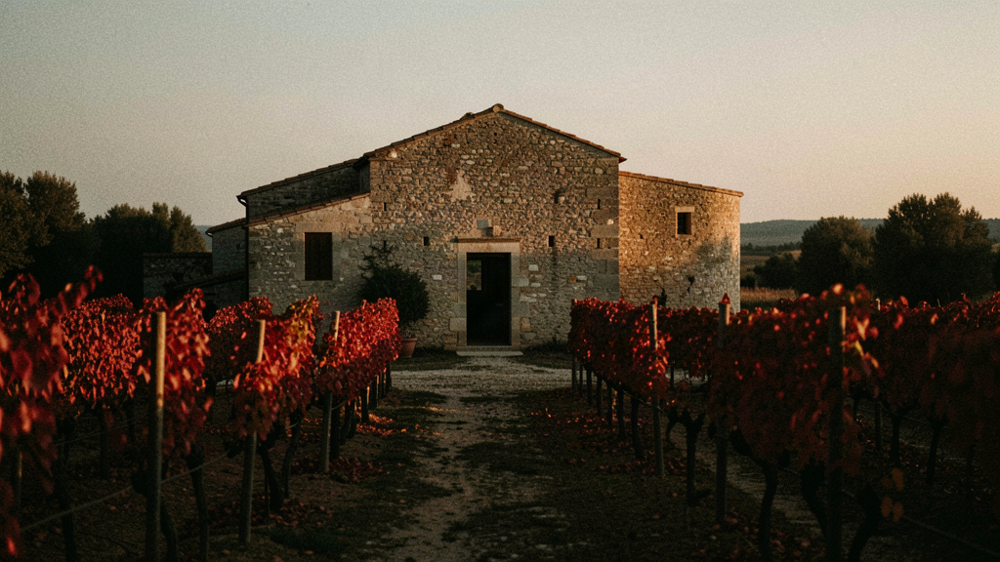
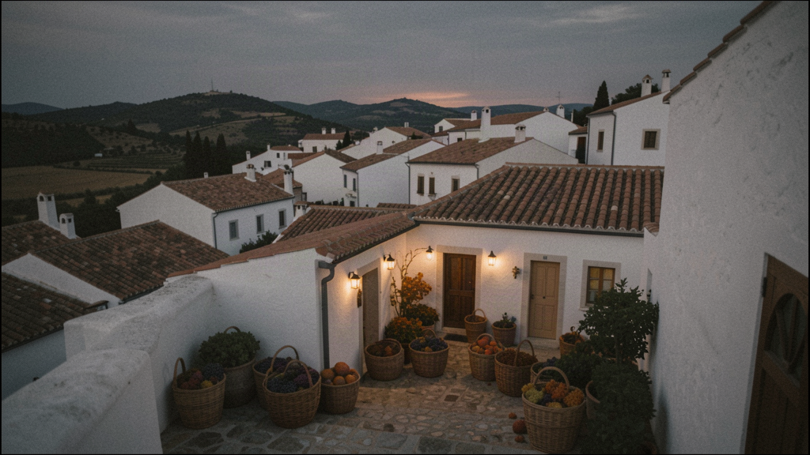
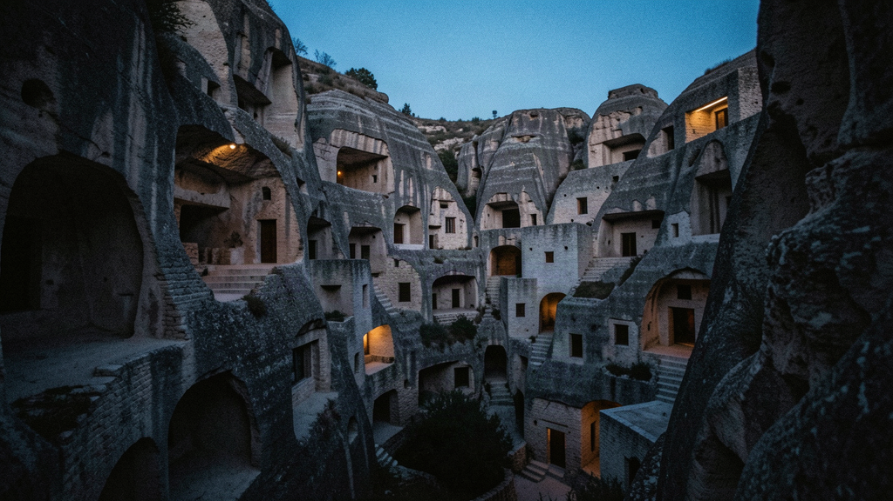
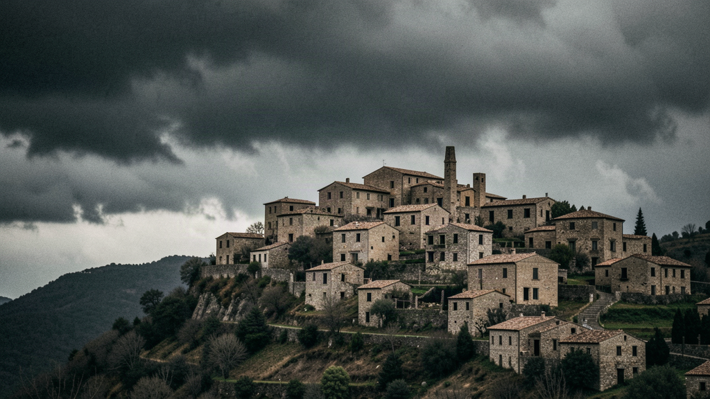
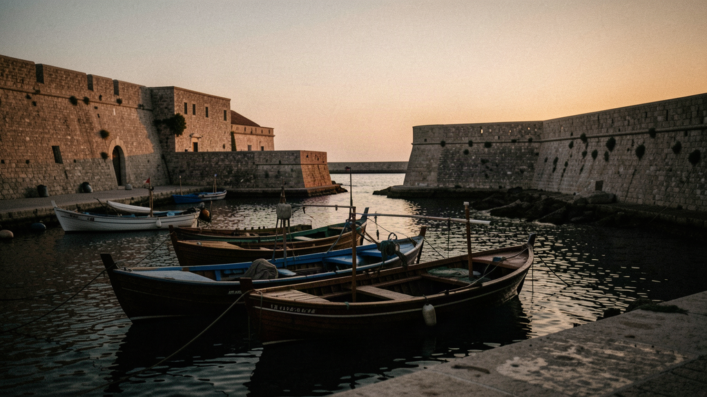
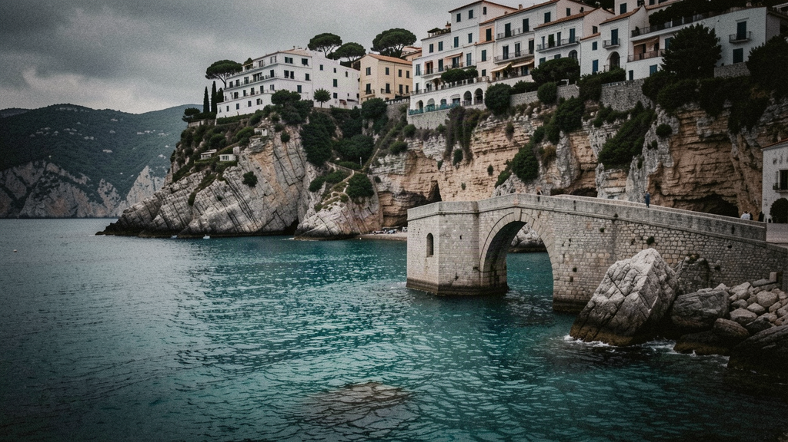
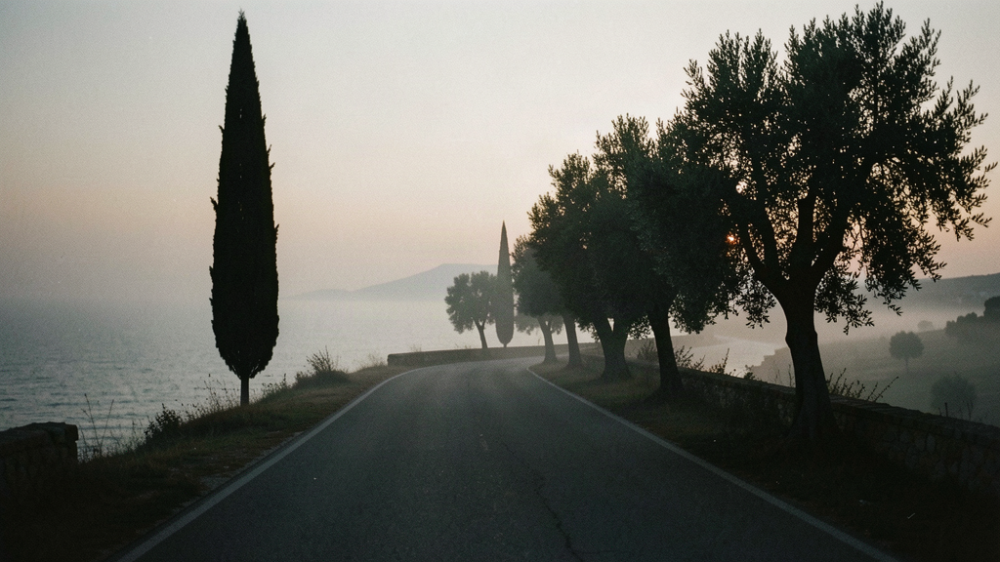

Italy · Autumn
Seven nights, your own room. The grape harvest, the Sassi of Matera, and an Adriatic still warm enough to swim.
You show up solo. You don't travel alone.
This is the autumn trip — September into October, the grape harvest, fewer people, the sea still warm enough to swim. We put you in a masseria near Ostuni for the vendemmia, take you to Matera and its Sassi in nearby Basilicata, then finish on the Adriatic for seafood.
Gianni was born in the Sassi of Matera and left as a teenager; he came back to guide his own city twenty years later. He runs the Matera days himself and joins for the harvest. A local guide covers the coast.
Your table this week sits between four and eight people, all in their late 30s to 50s, placed for how you're likely to get on — not because you're alike. We don't promise chemistry. We stack it in your favour and give you your own key each night.

— Fly into Bari (BRI). A driver meets you; about 50 minutes south on the SS16 to a masseria among the vines outside Ostuni.
— Settle into your own room. The table gathers through the afternoon.
— Welcome dinner at the masseria: the season's vegetables, grilled meat, the house oil.

— Ostuni old town — the white lanes, the cathedral's rose window, the drop to the sea.
— Grape harvest at Masseria Brancati, an organic estate just outside Ostuni. September and early October is vendemmia: you pick Primitivo and Negroamaro by hand, watch the press, then taste the young wine against the finished one. Gianni keeps it practical.
— Slow Food dinner nearby; the table orders family-style.

— Check out, drive about 1 hour 10 east to Matera (Basilicata).
— The Sassi: Sassi Caveoso and Sasso Barisano, the carved-stone districts. Walk to Casa Grotta di Vico Solitario, a furnished cave house, and see Palombaro Lungo, the vast underground cistern. Gianni grew up near here and shows you the city without a script.
— Dinner in the Sasso Barisano, in a converted cave.

— Drive about 50 minutes into Basilicata to Craco, the medieval hill town abandoned after landslides and the 1980 earthquake. You walk the lower paths and look up at the empty houses — no shops, no cafés, just the structure.
— Continue through the Basilicata hills, or drop to the Ionian at Metaponto to see the Greek temple columns. Back to Matera by late afternoon.
— Dinner in Matera; the cathedral is lit at night.

— Check out, drive about 1 hour west to the Adriatic at Monopoli.
— Monopoli old town and harbour; lunch on seafood at Antiche Mura, a family place by the castle. The sea is still warm in September and October.
— Dinner on the coast. Your room is yours alone.

— Drive 20 minutes north to Polignano a Mare. Walk Lama Monachile under the bridge, look down at Grotta Palazzese from above.
— Raw fish at Pescaria, or free time on the terrace. Gianni points out where the locals actually swim.
— Farewell dinner over the Adriatic. The table has, by now, found its shape.

— A slow coastal walk, then a 40-minute transfer to Bari (BRI) for your flight. Departures from BRI run across the day, so you're not racing the clock.
Autumn is the better-kept season — warm sea, empty sites, the vineyards working. But the harvest dates move with the weather, and some coastal places start to close in late October. We plan around the likely window and tell you the real dates when your table is set.
From £2,250 per person · 7 nights · own room included · expected 2026/27. Flights separate. Register your interest; we write when a table is composed for the season, not before.
When a table opens for Italy in Autumn, we'll tell you. One message when there's something real — no newsletter, no hard sell.
Register your interest